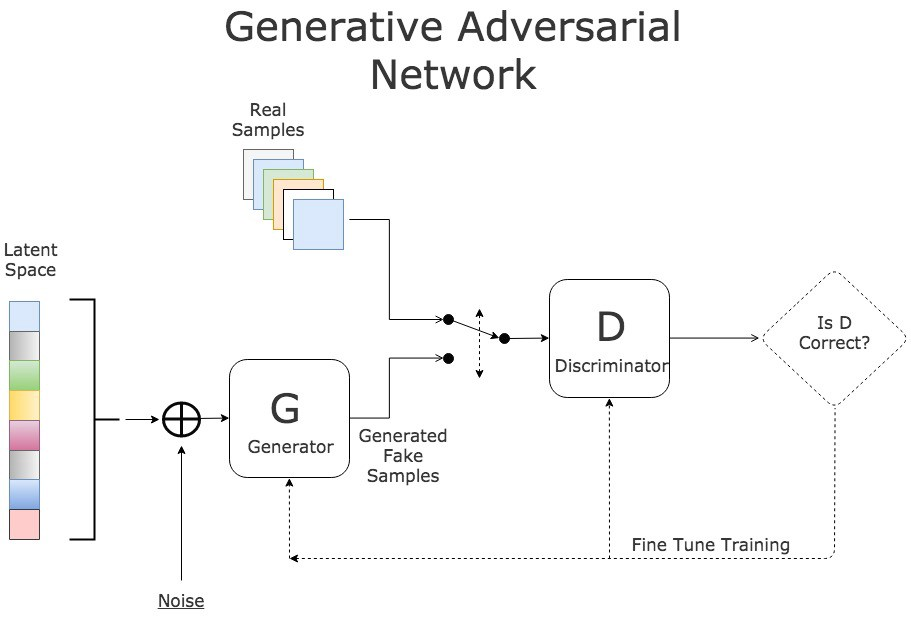
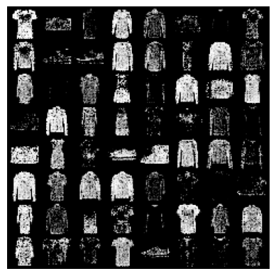
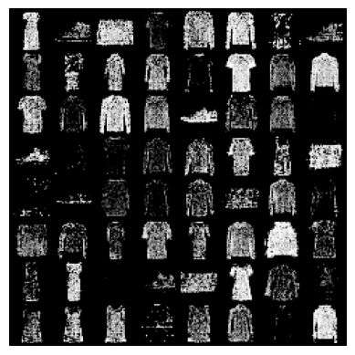
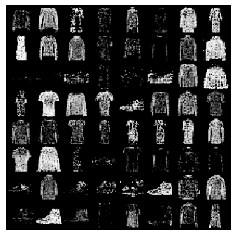
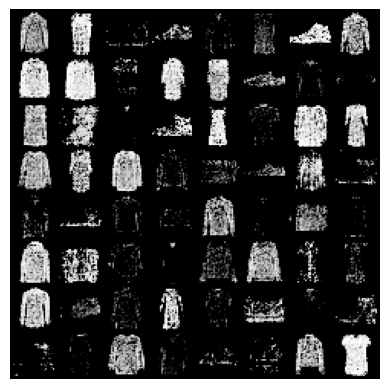
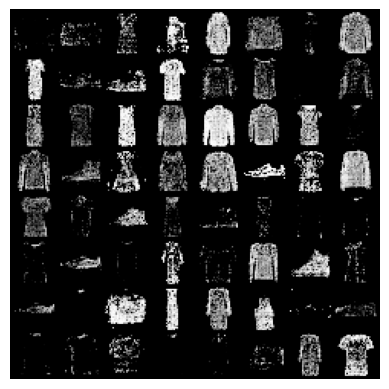
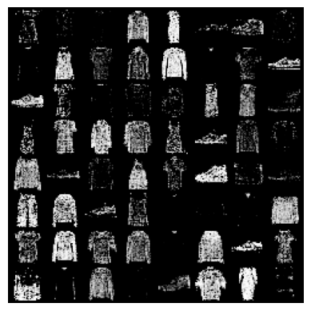

import torch
import torch.nn as nn
import torch.optim as optim
import torchvision
import torchvision.datasets as datasets
import matplotlib.pyplot as plt
from torchvision import transforms
from torch.utils.data import DataLoader
from torchvision.utils import make_gridGenerative Adversarial Networks (GANs) have sparked a revolution in the field of generative AI and machine learning. Conceived by Ian Goodfellow and his team in 2014, GANs trains two neural networks to compete against each other to generate more authentic new data from a given training dataset. Today, I will be sharing with you about about the what GANs are, the mathematics and theory behind it, and finally show you how to code a GAN from scratch using PyTorch!
What are Generative Adversarial Networks (GAN)?
Deep learning has resulted in development of discriminative models capable of mapping high-dimensional, rich sensory inputs to a class label. For example, discriminative models can learn to differentiate and label images of animals. The successes can be attributed to algorithms like backpropagation and dropout, often utilising piecewise linear units with well-behaved gradients such as ReLU.
In contrast to discriminative models, deep generative models have had less impact. Generative models aim to model the underlying probability distribution of the data, allowing for the generation of new samples that resemble the original dataset. However, deep generative models face several challenges:
- Complexity in Probabilistic Computations: Probabilistic computations involving techniques like maximum likelihood estimation can become intractable (cannot be solved by a polynomial-time algorithm) as the complexity of the model increases
- Difficulty Leveraging Piecewise Linear Units: It is difficult to leverage piecewise linear units like ReLU in generative models

In this paper, the authors introduce the concept of adversarial networks where a generative model is pitted against an adversary: a discriminative model that learns to determine whether a sample is produced by the generative model or from the actual data distribution. The analogy used is that the generative model represents a team of counterfeiters trying to produce fake currency and use it without detection, while the discriminative model is like the police, trying to detect the counterfeit currency. Competition results in both teams to improve their methods until generated samples are indistinguishable from data samples.
The competition between the two networks is the primary training criterion. GANs operate as a minimax game where one player’s gain is the other player’s loss, and the goal is to minimise the maximum possible loss. The objective of the game is to reach a strategic equilibrium, known as a saddle point, in their value functions.
GAN generates samples by passing random noise through a multilayer perceptron. This introduces latent variables and allows the generative model to learn features that are robust to variations in the input. Both models are trained using only backpropagation and dropout algorithms, requiring only forward propagation for sampling from the generative model, without the need for approximate inference (approximating complex probability distributions for intractable computations using techniques such as Markov Chain Monte Carlo). The lack of feedback loops (recurrent layers) make GAN better at leveraging piecewise linear units.
NotationTo minimise confusion, here are the notation used throughout this page:
- \(x\) : Real data
- \(z\) : Latent/ Noise vector
- \(G(z)\) : Generated data
- \(D(x)\) : Discriminator’s evaluation of real data
- \(D(G(z))\) : Discriminator’s evaluation of generator data
Adversarial Nets
Both the generator and discriminator are multilayer perceptrons.
The generator is designed to learn a distribution \(p_g\) over the data \(x\). It starts with random noise vector \(z\) drawn from a prior distribution denoted as \(p_z(z)\). The generator, represented by \(G(z; \theta_g)\) takes in \(z\) and generates samples from the data space where \(\theta_g\) is the parameters of the multilayer perceptron.
The discriminator takes in input \(x\) and outputs a single scalar value \(D(x)\). This output represents the probability that \(x\) comes from the real dataset rather than generated by \(G\).
We train \(D\) to maximise the probability of assigning the correct label to both training examples and samples from \(G\). We train \(G\) to minimize \(log(1 - D(G(z))\); the \(log\) of the probability that \(D\) incorrectly identifies the generated data as real data → lower log probability means higher error rate of \(D\)
Derivation of the value function: the value function is actually derived from the Binary Cross-Entropy (BCE) w.r.t. the output of \(D\). \(G\) tries to maximise the BCE of \(D\).
For a single observation \(x\), the Binary Cross-Entropy Function is given as:
\[ L = -[ylog(\hat y) + (1-y)log(1-\hat y)] \]
where \(y\) is the ground truth and \(\hat y\) is the predicted probability of the model.
In the case of GANs, \(y\) corresponds to the real/generated label and \(\hat y\) corresponds to the probability output of \(D\). We have:
- when \(y = 1\) (sample \(x\) from real data) → \(L = -log[D(x)]\)
- when \(y = 0\) (sample \(x\) from \(G(z)\) ) → \(L = -log[1 - D(G(z))]\)
Combining the two loss terms, the objective function for GANs is given by an expectation over \(p_{data}(x)\) and \(p_z(z)\)
\[ \underset{G}{min}\space\underset{D}{max}\space V(G,D) = E_{x \sim p_{data}(x)}[logD(x)] + E_{z \sim p_{z}(z)}[log(1-D(G(z)))] \]
where \(D\) and \(G\) play a minimax game with value function \(V(G,D)\).
Early in training when \(G\) is poor, \(D\) can easily identify generated samples as fake, resulting in saturation of the \(log(1 - D(G(z))\) term. To counter this, rather than training \(G\) to minimize \(log(1 - D(G(z))\), we can train \(G\) to maximise \(log(D(G(z))\). This encourages \(G\) to produce generated samples that the discriminator is more likely to classify as real, providing stronger gradients for \(G\) early in learning.
Training dynamics and Convergence behaviour of GANs

Definition
- The black dotted lines represents the data generating distribution, \(p_{data}\).
- The green solid lines represent the generative distribution \(p_g\).
- The blue dashed lines represent the discriminative distribution \(D\)
- The lower horizontal line is the domain where the random noise \(z\) is sampled
- The upper horizontal line is the domain of the data \(x\)
- The upward arrows show how \(G\) imposes \(p_g\) to map \(x = G(z)\). \(G\) contracts in areas where \(p_g\) is dense and expands in areas where \(p_g\) is sparse.
From (a) to (c), \(D\) is trained to discriminate samples from data, converging to \(D^*(x) = \frac{p_{data}(x)}{p_{data}(x) + p_g(x)}\), as signified by the shift in the blue dashed lines
This then guides \(G(z)\) to flow to regions more likely to be classified as data, signified by the leftwards shift in the green solid lines
This continues until convergence at (d) where \(p_{data} = p_g\) and \(D(x) = \frac{1}{2}\)(likelihood that \(D\) accurately predicts the correct label is half)
Note: \(p_{data}\) is discrete and \(p_g\) is a learnt continuous representation over the data \(x\). Also, \(G\) never gets to see the training data, it can only observe it through the behaviour of \(D\).
Algorithm

Notes:
- For every \(k\) updates to \(D\), we update \(G\) once
- \(\nabla_{\theta_g}\) is only dependent on the transformation of \(z\) into \(G(z)\) so we can discard the \(logD(x)\) term as the discriminator’s evaluation of real data \(x\) does not contribute to the gradient
- Gradient ascent/descent with momentum utilises past gradient updates to help maintain the direction and speed of optimisation → prevent stagnant learning due to negligible gradients at saddle points
Proof of a Global Optimality of \(p_g = p_{data}\)
Proposition 1: For a fixed \(G\), the optimal \(D\) is
\[ D^*(x) = \frac{p_{data}(x)}{p_{data}(x) + p_g(x)} \]
Proof: The goal of \(D\), given any \(G\), is to maximise the value function \(V(G,D)\).
\[ \begin{align}\notag V(G,D) &= E_{x \sim p_{data}(x)}[logD(x)] + E_{z \sim p_{z}(z)}[log(1-D(G(z)))] \\ &= \notag\int_{x}p_{data}(x)log(D(x))dx + \int_{z}p_{z}(z)log(1-D(G(z)))dz \\ &= \notag\int_{x}p_{data}(x)log(D(x)) + p_{g}(x)log(1-D(x))dx \end{align} \]
- Note: \(x\) in the above equation represents data samples and each term is weighted by the probability of x occurring in \(p_{data}\) and \(p_g\) respectively (where \(x\) belongs to the black dotted lines or green solid lines)
Through a partial derivative of \(V(G,D)\) w.r.t. \(D(x)\), the optimal discriminator \(D^*(x)\) occurs when
\[ \frac{p_{data}(x)}{D(x)} - \frac{p_g(x)}{1-D(x)} = 0 \]
which implies
\[ D^*(x) = \frac{p_{data}(x)}{p_{data}(x) + p_g(x)} \]
concluding the proof of Proposition 1.
Theorem 1: The global minimum, \(\underset{G}{min}\space V(G,D^\ast)\) , is achieved iff \(p_g = p_{data}\) . At that point, \(\underset{G}{min}\space V(G,D^*) = -log4\)
Proof: with Proposition 1, we get
\[ \begin{align}\notag V(G,D^*) &= E_{x \sim p_{data}(x)}[log(\frac{p_{data}(x)}{p_{data}(x) + p_g(x)})] + E_{x \sim p_{g}(x)}[log(1-\frac{p_{data}(x)}{p_{data}(x) + p_g(x)})] \\ & = E_{x \sim p_{data}(x)}[log(\frac{p_{data}(x)}{p_{data}(x) + p_g(x)})] + E_{x \sim p_{g}(x)}[log(\frac{p_{g}(x)}{p_{data}(x) + p_g(x)})] \notag \end{align}\notag \]
By exploiting the properties of logarithms, we get
\[ \begin{align}\notag V(G,D^*) & = E_{x \sim p_{data}(x)}[log(\frac{p_{data}(x)}{\frac{p_{data}(x) + p_g(x)}{2}})] + E_{x \sim p_{g}(x)}[log(\frac{p_{g}(x)}{\frac{p_{data}(x) + p_g(x)}{2}})] - 2log2 \\ & = -log4 + E_{x \sim p_{data}(x)}[log(\frac{p_{data}(x)}{\frac{p_{data}(x) + p_g(x)}{2}})] + E_{x \sim p_{g}(x)}[log(\frac{p_{g}(x)}{\frac{p_{data}(x) + p_g(x)}{2}})] \notag \end{align} \notag \]
We can express the expectations in the original objective function using the Kullback-Leibler divergence
\[ V(G,D^*) = -log4 + D_{KL}(p_{data} || \frac{p_{data} + p_g}{2}) + D_{KL}(p_{g} || \frac{p_{data} + p_g}{2}) \]
- Note: Kullback-Leibler divergence, denoted by \(D_{KL}(P || Q)\), measures how one probability distribution \(P\) diverges from a reference distribution \(Q\). It quantifies the difference between the two probability distributions by computing the expected logarithmic difference between \(P\) and \(Q\) when the data is sample from \(P\). In continuous probability distributions, Kullback-Leibler divergence is defined by
\[ \begin{align} \notag D_{KL}(P || Q) & = \int_{-\infty}^{\infty}P(x)log(\frac{P(x)}{Q(x)})\space dx \\ & = E_{x\sim P(x)}[log(\frac{P(x)}{Q(x)})] \notag \end{align} \]
Our objective function can then be expressed using Jensen-Shannon divergence as such
\[ V(G,D^*) = -log4 + 2JSD(p_{data}||p_g) \]
- Note: Jensen-Shannon divergence, denoted by \(JSD(P||Q)\), is based on the Kullback-Leibler divergence and it is a symmetric measurement of the similarity between two probability distributions \(P\) and \(Q\). It is given by
\[ JSD(P||Q) = JSD(Q||P) = \frac{1}{2}D_{KL}(P||\frac{P+Q}{2}) + \frac{1}{2}D_{KL}(Q||\frac{P+Q}{2}) \]
Given that Jensen–Shannon divergence between two distributions is always non-negative and zero only when they are equal, we have shown that \(\underset{G}{min}\space V(G, D^*) = -log4\) is the global minimum to the minimax game and that happens when \(p_{data} = p_g\), i.e., the generative model perfectly replicating the real data.
Code
Now that we have covered all the nitty-gritty details, let’s try to code a GAN model using Tensorflow and Python
Setup
First we need to import the necessary modules
device = torch.device("cuda" if torch.cuda.is_available() else "cpu")Hyperparameters
Then we will define the hyperparameters for the GAN. Here are the details: 1. lr - learning rate 2. latent_dim - the dimensions of the latent space which the generator will learn 3. features - the number of pixels in the 28x28 image 4. batch_size - we will be performing batch gradient descent 5. n_epochs - number of times to pass training data through the model 6. show_interval - interval to show fake generated images by the generator
lr = 1e-4
latent_dim = 128
features = 28 * 28 * 1 # 28x28 = 784 pixels
batch_size = 64
n_epochs = 60
show_interval = 10Loss criterion
We will be using the Binary Cross Entropy to measure the loss of the discriminator and generator for the minimax objective of the GAN model. For a single observation \(x\), the Binary Cross-Entropy Function is given as:
\[ L = -[ylog(\hat y) + (1-y)log(1-\hat y)] \]
where \(y\) is the target and \(\hat y\) is the predicted probability of the discriminator.
For the discriminator, the loss is 1. when \(y = 1\) (sample \(x\) from real data) → \(L = -log[D(x)]\) 2. when \(y = 0\) (sample \(x\) from \(G(z)\) ) → \(L = -log[1 - D(G(z))]\)
For the generator, the loss is always \(L = -log[D(G(z))]\) because the target is 1; to fool the discriminator that the fake images are real.
criterion = nn.BCELoss()Building our Discriminator
Here we created our discriminator which is a simple feedforward neural network with a single hidden layer of 256 nodes. We use a popular activation function called LeakyReLU to introduce non-linearity to our neural network such that it can learn deeper complexities. Lastly, we must add a sigmoid activation function because we want our discriminator to output a probability between 0 and 1 (fake or real image)
class Discriminator(nn.Module):
def __init__(self, features):
super().__init__()
self.disc = nn.Sequential(
nn.Linear(features, 256),
nn.LeakyReLU(0.1),
nn.Linear(256,256),
nn.LeakyReLU(0.1),
nn.Linear(256,1),
nn.Sigmoid(),
)
def forward(self, data):
return self.disc(data)Building our Generator
Similarly, our generator is also a simple feedforward neural network. The difference is that we use the \(\tanh\) activation function at the end because we want the model to output tensor images values between [-1,1]
class Generator(nn.Module):
def __init__(self, latent_dim, features):
super().__init__()
self.gen = nn.Sequential(
nn.Linear(latent_dim, 256),
nn.LeakyReLU(0.1),
nn.Linear(256, 256),
nn.LeakyReLU(0.1),
nn.Linear(256, features),
nn.Tanh(), # so that output are [-1,1]
)
def forward(self, x):
return self.gen(x)Let’s initialize our models and move them to our device
disc = Discriminator(features).to(device)
gen = Generator(latent_dim, features).to(device)We will be using Adam optimizers for both the generator and discriminator. Adam optimizers help to scale the learning rate for each parameter so that we can have more stable and faster convergence
opt_disc = optim.Adam(disc.parameters(), lr=lr)
opt_gen = optim.Adam(gen.parameters(), lr=lr)Data
Today, we will teach our GAN model to generate 28x28 images of clothing items using the Fashion-MNIST dataset which consists of 70000 28x28 grayscale images of clothing items

In order for our images to be trained using PyTorch, they needs to be transformed to the Pytorch tensors using the torchvision.transforms module. Moreover, we will normalize the data with a mean of 0.5 and standard deviation of 0.5.
transform = transforms.Compose([
transforms.ToTensor(), # convert images to tensors
transforms.Normalize((0.5,), (0.5,)) # normalize data
])Then, we import the FashionMNIST images using Pytorch API and apply our transformations concurrently.
# This might take a while
ds = datasets.FashionMNIST('~/.pytorch/F_MNIST_data', transform=transform, download=True)Lastly, we initialize a PyTorch DataLoader utility class to help with the loading of images in batches during the training. We also use it to shuffle the data as a habit (no actually necessary because the images are not ordered by labels anyways)
data_loader = DataLoader(dataset=ds, batch_size=batch_size, shuffle=True)Training Loop
Now all that’s left to do is to train the models. The code looks confusing so I will break it down for you:
Step 1: First, we flatten all the real images of shape (28,28) to (784,1). Then we pass the images to the discriminator to measure if it can tell whether these images are real. We calculate the generator’s loss from the real images using \(L = -log[D(x)]\)
Step 2: We generate batch_size=64 sets of noise values (128 dimensions) from the latent space and pass it into the generator to generate 64 fake images. Then, we pass the fake images to the discriminator to measure if it can tell whether these images are fake. We calculate the generator’s loss from the fake images using \(L = -log[1 - D(G(z))]\)
Step 3: The generators actual loss would be the average between the loss from real images and loss from fake images. In Pytorch, we have to explicitly zero the gradients before every backpropagation because the gradients can accummulate between batches (we don’t want that!). We also pass the parameter retain_graph=True when performing backpropagation to prevent it from freeing saved tensors (default behaviour) because we want to keep the tensor of fake generated images for later. Then, perform parameter updates based on the current gradients using Adam.
Step 4: We calculate the generator’s loss using \(L = -log[D(G(x))]\) which measures the generator’s failure in fooling the discriminator. Similarly, we zero the gradients before backpropagation and we update the Adam optimizer.
Step 5: Last but not least, after every epoch (one full pass of training data into the model), we print the last recorded discriminator and generator losses. We then use the make_grid function from Pytorch’s torchvision library to display the fake generated images every 10 epochs.
for epoch in range(n_epochs):
for batch_idx, (real_images, _) in enumerate(data_loader):
# Step 1
real_images = real_images.view(-1, features).to(device)
yhat_real = disc(real_images)
disc_real_loss = criterion(yhat_real, torch.ones_like(yhat_real))
# Step 2
noise = torch.randn((batch_size, latent_dim)).to(device)
fake_images = gen(noise)
yhat_fake = disc(fake_images)
disc_fake_loss = criterion(yhat_fake, torch.zeros_like(yhat_fake)) # Calculate first loss
# Step 3
disc_loss = (disc_real_loss + disc_fake_loss) / 2 # Calculate second loss
disc.zero_grad() # Zero the gradients of the discriminator
disc_loss.backward(retain_graph=True) # Backpropagate loss through Discriminator
opt_disc.step()
# Step 4
yhat = disc(fake_images) # Calculate second loss
gen_loss = criterion(yhat, torch.ones_like(yhat))
gen.zero_grad() # Zero the gradients of the discriminator
gen_loss.backward() # Backpropagate loss through Generator
opt_gen.step()
# Step 5
print(
f"Epoch [{epoch+1}/{n_epochs}], "
f"Discriminator loss: {disc_loss.item():.4f}, Generator Loss: {gen_loss.item():.4f}, "
)
if (epoch + 1) % show_interval == 0:
fake_images = fake_images.reshape(batch_size, 1, 28, 28).detach()
plt.imshow(make_grid(fake_images).permute(1, 2, 0))
plt.axis("off")
plt.show()It already looks pretty accurate for just 10 epochs of training
...
Epoch [10/60], Discriminator loss: 0.4271, Generator Loss: 1.7796,
...
Epoch [20/60], Discriminator loss: 0.3541, Generator Loss: 1.7771, 
...
Epoch [30/60], Discriminator loss: 0.3279, Generator Loss: 1.5646, 
...
Epoch [40/60], Discriminator loss: 0.3740, Generator Loss: 1.8119, 
...
Epoch [50/60], Discriminator loss: 0.3708, Generator Loss: 1.5465, 
...
Epoch [60/60], Discriminator loss: 0.4491, Generator Loss: 1.6756, 
The final generated images do look quite similar to the training images, doesn’t it? It is definitely not perfect but it is pretty decent for our implementation of a simple GAN model.
Conclusion
As we come to the end of our exploration into Generative Adversarial Networks (GANs), it’s clear they’ve made an incredible mark in the world of artificial intelligence. From the moment the groundbreaking paper “Generative Adversarial Networks” was released, it completely shook up the world of generative AI. However, as pioneering as GANs are, they do have their downsides, such as being prone to mode collapse, which has led other researchers to work hard on finding ways to improve them. Also, there’s been some exciting progress in the world of generative models, with architectures like “Stable Diffusion” stepping up and showing impressive performance rivaling GANs.
I hope you’ve enjoyed this post about GANs. I am definitely interested in sharing more about research regarding Generative AI in the future so please look out for them! See you next time!
References
- https://arxiv.org/abs/1406.2661
- https://www.kdnuggets.com/2017/01/generative-adversarial-networks-hot-topic-machine-learning.html
- https://www.youtube.com/watch?v=eyxmSmjmNS0
- https://www.youtube.com/watch?v=J1aG12dLo4I
- https://jaketae.github.io/study/gan-math/
- https://en.wikipedia.org/wiki/Kullback–Leibler_divergence
- https://www.youtube.com/watch?v=OljTVUVzPpM